地政学
ルールはライン川と欧州内陸交通の交差点にあり、石炭、鉄鋼、戦争、占領、欧州統合を経験した地域です。国家首都ではありませんが、産業力と労働運動を通じてドイツと欧州の政治経済を支えた場です。統合にも響きます。

🇩🇪 ドイツ / ノルトライン＝ヴェストファーレン / World City Atlas
炭鉱と鉄鋼で世界を動かした多核都市圏です。エッセン、ドルトムント、デュイスブルク、ボーフムが連なり、産業遺産、物流、大学、移民、サッカー、緑地再生が日常の近さで重なります。
都市の骨格
ルールは単独の大都市ではなく、炭鉱、製鉄、運河、鉄道、労働者住宅、大学、文化施設が市境を越えて連続する都市圏です。中心を探すより、複数の中心がどう分担し、競い、つながるかを見ると読みやすいです。
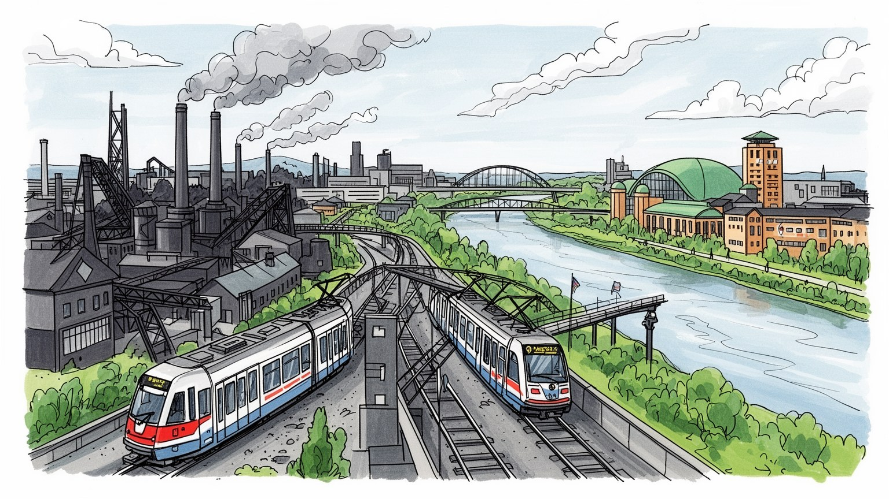
ルールはライン川と欧州内陸交通の交差点にあり、石炭、鉄鋼、戦争、占領、欧州統合を経験した地域です。国家首都ではありませんが、産業力と労働運動を通じてドイツと欧州の政治経済を支えた場です。統合にも響きます。
炭鉱閉山後も、デュイスブルクの鉄鋼、化学、物流、エネルギー、医療、大学研究、IT、文化産業が雇用を作ります。重工業の誇りと失業、技能転換、移民労働が同じ地域の記憶として残ります。その差は街区にも残ります。
カトリック、プロテスタント、移民のモスク、労働者協会、合唱、劇場、博物館、クラブ音楽、サッカーが生活文化を形作ります。信仰と文化は壮麗な中心より、近隣の会館や競技場に強く現れます。市場の食もあります。
観光客はツォルフェライン、港、産業遺産、劇場、サッカーを巡りますが、住民には住宅団地、移動、職業訓練、高齢化、環境再生、地域格差が日常条件です。遺産と生活が離れない都市圏です。広域鉄道移動も鍵です。
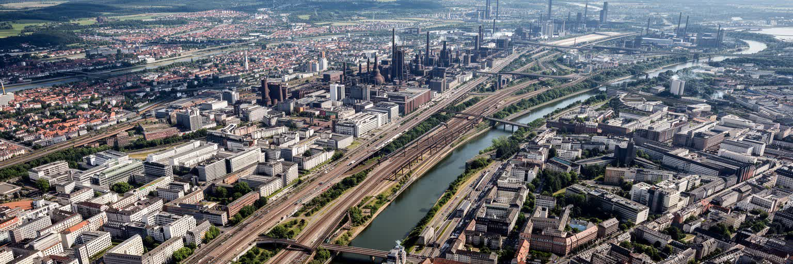
ルール地方を読む第一の鍵は、一つの都心を持たないことにあります。エッセン、ドルトムント、デュイスブルク、ボーフム、ゲルゼンキルヒェン、オーバーハウゼン、ミュールハイム、ハーゲンなどが短い距離で並び、それぞれに駅前、劇場、大学、商店街、工場跡、住宅地を抱えます。市境は行政上は明確でも、鉄道や高速道路で移動する住民にとっては、働く場所、買い物、通学、観戦、通院が市をまたいで組み合わされます。ルール川、ライン川、運河、かつての鉱山鉄道は、この多核性を産業の網として束ねてきました。中心が分散していることは弱点だけではありません。大きな首都のように一箇所へ資本と象徴を集めるのではなく、各都市が港湾、大学、文化、医療、物流、住宅を分担し、地域全体として厚みを持ちます。ただし分散は調整を難しくもします。公共交通、土地利用、産業誘致、文化投資、貧困対策は、市ごとの判断だけでは足りません。ルールの都市感覚は、地図上の線より、毎日の乗り換え、サッカーの応援圏、職場の移動範囲、親族の住む隣町によって作られます。単独都市ではなく、連続する生活圏として見ることで、ドイツ西部の産業都市の実像が見えます。駅前の小さな中心がいくつも残るため、衰退も再生も一様には進みません。ある都市では大学と文化施設が人を集め、別の都市では商店街の空洞化や財政難が目立ちます。このばらつきこそ、ルールを単純な成功例にも失敗例にもできない理由です。
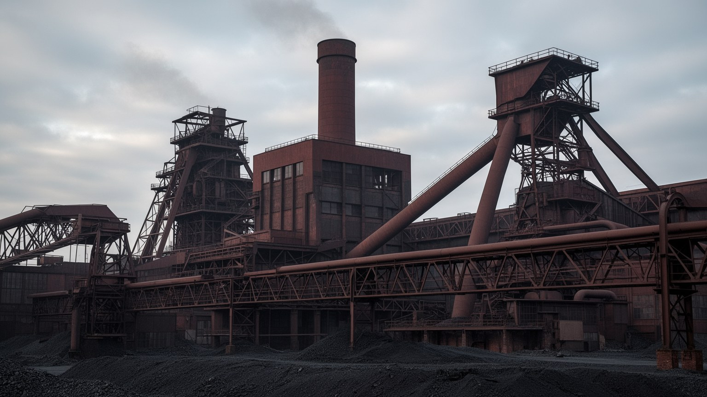
ルールの近代史は、石炭を掘り、鉄を溶かし、機械を動かす労働の記憶から始まります。炭鉱の立坑、コークス炉、溶鉱炉、貨物線、労働者住宅、共同浴場、組合、病院、教会、酒場は、単なる産業設備ではなく地域社会の骨格でした。地下で働く危険、粉じん、事故、夜勤、家族の不安は、賃金と誇りの裏側に常にありました。第二次世界大戦後の復興と西ドイツの経済成長は、ルールの石炭と鉄鋼に大きく支えられましたが、その産業力は戦争、占領、賠償、欧州石炭鉄鋼共同体にも深く関わりました。炭鉱閉山後、櫓や工場は博物館、劇場、イベント会場、公園へ転用され、ツォルフェラインのような世界遺産は地域の新しい顔になりました。ですが遺産化は、過去を美しい景観へ変えるだけでは足りません。そこには移民労働者、女性の家事と家計、事故で失われた身体、地域の失業、技能の断絶も含まれます。ルールの産業遺産を歩くことは、巨大な機械の美しさを見ると同時に、そこを動かした人の時間と危険を想像することでもあります。坑道から戻る父を待つ家庭、炭じんを洗う浴場、組合の集会、病院の呼吸器科、食卓を支えた女性の無償労働も、この地域の産業史に含まれます。観光化された櫓の影には、労働災害と公害を経験した身体の記憶が残ります。その沈黙を含めてこそ、遺産は地域の歴史になります。見えない痛みも読む必要があります。
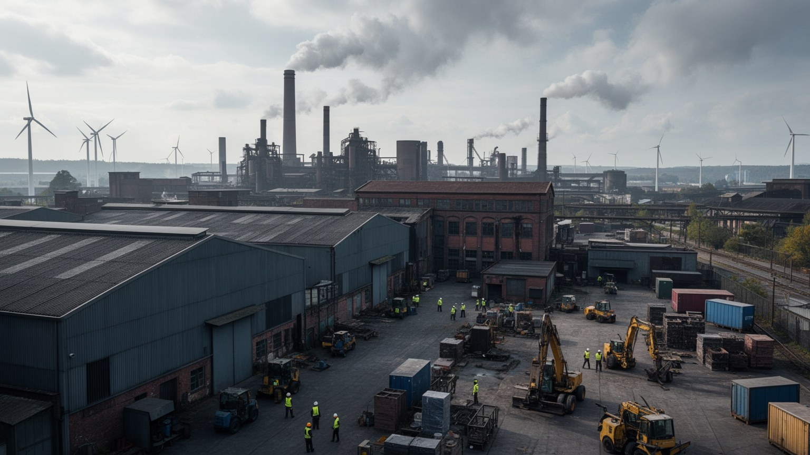
ルールの産業転換は、古い工業都市が文化施設へ変わったという簡単な物語ではありません。炭鉱が閉じ、鉄鋼の雇用が縮小すると、地域は失業、若者流出、財政負担、学校教育、職業訓練の難題に直面しました。いまもデュイスブルクの鉄鋼、マール周辺の化学、エネルギー、機械、物流は地域経済を支えますが、雇用の中心は医療、介護、教育、大学、研究、行政、サービス、情報通信へ広がっています。産業転換の難しさは、工場跡に新しい建物を置くことだけではなく、働く人の技能、通勤、賃金、誇りをどうつなぎ直すかにあります。重工業で培われた機械、材料、保守、安全管理の知識は、環境技術、水素、リサイクル、都市インフラにも応用できます。しかし低賃金のサービス職へ置き換わるだけなら、地域の生活は安定しません。ルールの未来は、過去の工業を否定するのではなく、その技能を脱炭素、医療、研究、都市再生へ接続できるかで決まります。新しい経済を語るときも、閉山で傷ついた近隣の記憶と、いま働く人の生活条件を見落としてはなりません。産業転換は世代ごとに意味が違います。退職した鉱山労働者には喪失であり、学生には研究と起業の機会であり、自治体には税収と福祉費の論点です。成功を測るには、新しい職場の数だけでなく、職業訓練を受けた人が地域に残れるかを見る必要があります。差は地域に残ります。
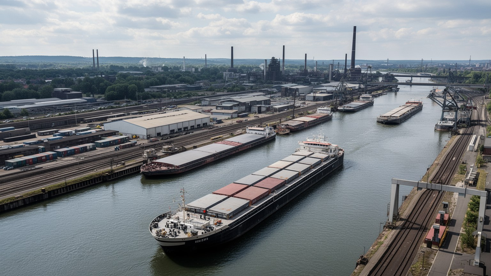
ルールの地政学的な重要性は、炭田だけでなく、ライン川と運河が内陸ヨーロッパを海へつなぐ位置にあることから生まれました。デュイスブルク港は内陸港として大きな役割を持ち、鉄鉱石、石炭、鋼材、化学品、コンテナ、消費財が水運、鉄道、道路へ積み替えられます。運河は工場へ原料を運び、製品を出し、いまは物流とレジャーと水辺再生の舞台にもなっています。グローバル化の時代には、ライン川の水位低下、鉄道混雑、倉庫労働、国際サプライチェーンの遅れが、ルールの工場と小売に直接響きます。物流は目立つ観光資源ではありませんが、地域の雇用と物価、環境負荷を左右します。大型倉庫やトラック交通は仕事を生む一方、大気汚染、騒音、土地利用、夜勤の負担も増やします。ライン川沿いの港湾は、産業都市の裏側ではなく、欧州経済の動脈です。ルールを読むには、博物館化された工場跡だけでなく、現在も動く貨物線、港、倉庫、橋、低水位時の不安を見る必要があります。川と物流は、産業転換後もこの地域を国際経済へ結び続けています。気候変動で渇水や洪水の振れ幅が大きくなるほど、川に依存する物流の弱さも見えます。港湾労働、通関、倉庫管理、鉄道の保守は、国際貿易を地域の日常へ引き寄せる仕事であり、橋や堤防の維持も経済の条件になります。水辺の変化は家計にも届き、地域の安全にも深く関わります。
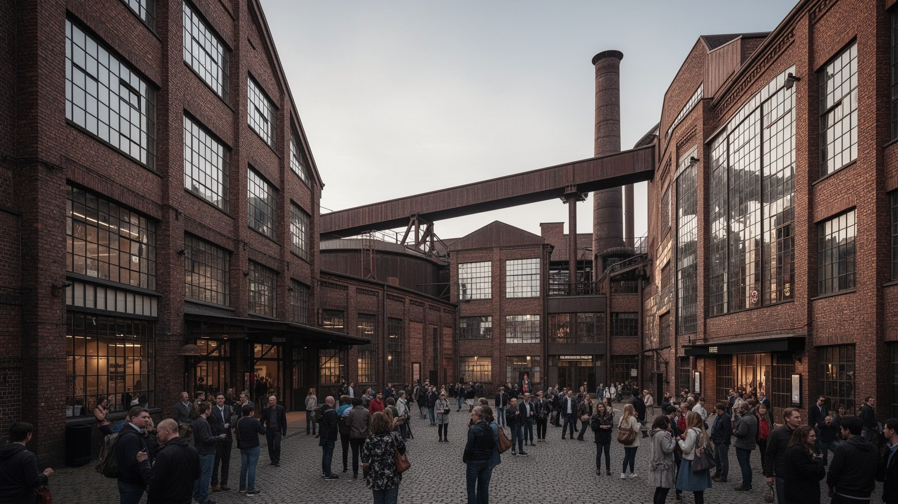
ルールの文化は、宮廷都市の古典的な中心ではなく、工場跡、劇場、博物館、フェスティバル、労働者合唱、クラブ、サッカー場、移民の店から厚みを得ています。ツォルフェライン、ガゾメーター、ルールトリエンナーレ、各都市の劇場や美術館は、産業施設を単なる廃墟ではなく公共文化の舞台へ変えました。これは都市ブランドの成功である一方、過去を観光しやすい物語に整えすぎる危険もあります。文化施設が増えても、近隣の学校、若者、移民家庭、低所得者がそこへ入りやすいとは限りません。入場料、交通、言語、心理的な距離は、文化の公平さを左右します。ルール文化の強さは、高尚な施設だけでなく、労働者の余暇、地域クラブ、音楽練習場、小劇場、街の祭り、週末市、トルコ系やポーランド系の食料品店が共存する点にあります。夜のクラブやライブハウスは学生と労働者を混ぜ、地元紙、地域ラジオ、クラブの広報は都市ごとの小さな誇りを伝えます。工場跡の巨大空間で現代芸術を見る経験は印象的ですが、その周囲で暮らす人の商店街や住宅が衰えるなら、文化再生は片側だけの成功になります。ルールを文化都市として読むには、産業遺産の美しさ、公共投資、地域教育、移民の表現、夜の安全、日常の娯楽を同じ条件として扱う必要があります。地域全体で回遊できる交通と広報があれば、分散した文化施設は多中心都市圏らしい強みに変わります。
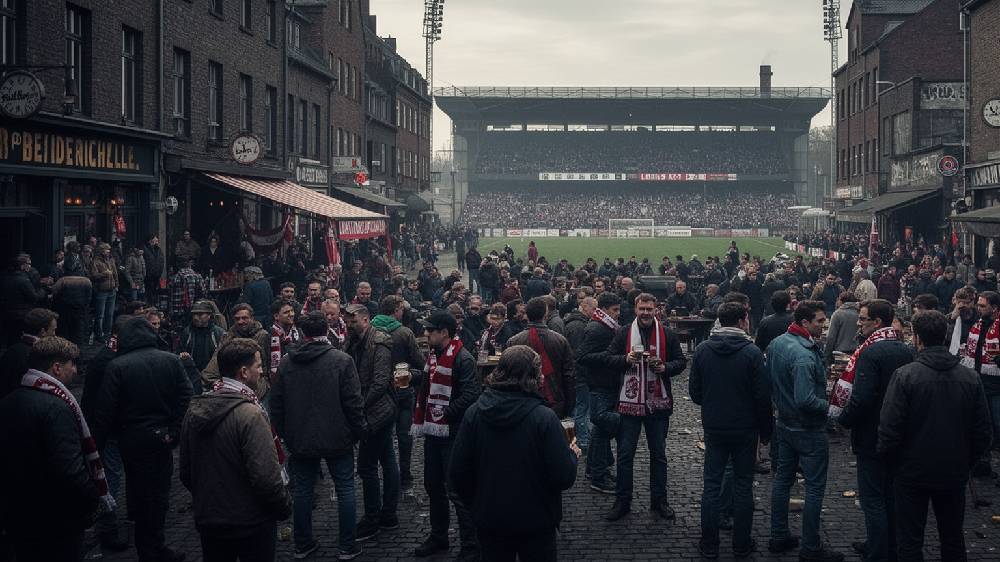
ルールの日常を理解するうえで、サッカーは単なる娯楽ではありません。ドルトムント、シャルケ、ボーフム、デュイスブルク、エッセンなどのクラブは、都市ごとの誇り、労働者文化、近隣の記憶、世代間の会話を支えます。試合の日には駅、トラム、ビールスタンド、住宅街、警備、清掃、飲食店が一つのリズムで動き、地域の感情が競技場へ流れ込みます。成績が悪い時もクラブは人の生活から消えません。祖父母から子どもへ受け継がれる応援、職場での会話、移民家庭の参加、地元店の旗は、都市の帰属意識を作ります。サッカーは連帯を生む一方、暴力、差別、過度な商業化、警備費用の摩擦も抱えます。巨大クラブのブランド化が進むほど、地域の小さなクラブや育成の場が持つ価値も見直されます。ルールでは、競技場は観光名所である前に、失業、産業転換、移民、階級、地元意識が語られる公共空間です。試合の歓声を聞くと、複数都市が近くに並びながら、それぞれの誇りを手放さない地域の性格が見えます。サッカーを通して読むルールは、工場だけでは説明できない生活都市の顔を持ちます。女性チーム、少年クラブ、移民の地域リーグ、障害者スポーツも、このサッカー文化の基礎にあります。大きなスタジアムの光だけでなく、週末の土のグラウンドを支えるボランティアを見ると、地域社会の厚みが分かります。そこに地域の声があります。
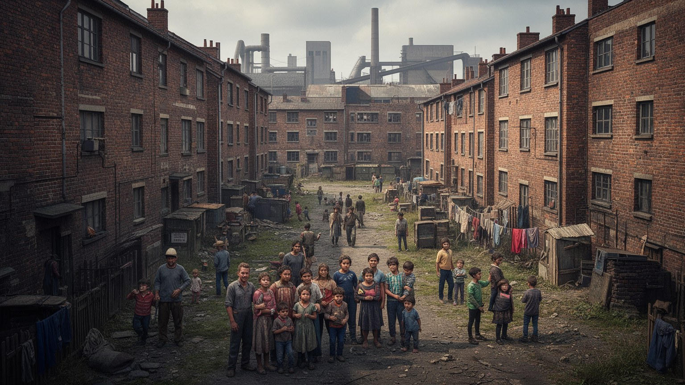
ルールの住宅地には、鉱山会社の労働者住宅、戦後の団地、郊外の戸建て、駅前の賃貸、移民の商店街が重なっています。産業化の時代にはポーランド系、シレジア系、イタリア系、トルコ系など多くの労働者が流入し、炭鉱と工場を支えました。彼らの子孫や新しい移民は、モスク、教会、食料品店、学校、スポーツクラブ、家族経営の店を通じて地域を作り直しています。ルールの多文化性は華やかな国際都市イメージではなく、現場労働、近隣の店、学校の言語支援、宗教行事、住宅の老朽化として現れます。安い住宅は住民を受け入れる入口になる一方、貧困や教育格差が集中しやすいです。閉山後の失業は、移民家庭だけの問題ではなく、地域全体の技能転換と社会保障の問題でした。住宅政策を考えるには、建物の改修、断熱、家賃、通学、公共交通、近隣の安全を一体で見る必要があります。ルールの近隣は、炭鉱が作った共同体をそのまま残しているのではありません。移民、学生、高齢者、低所得世帯、新しい専門職が入り混じり、古い労働者都市の記憶を使い直しながら暮らしています。言語の違い、職業資格の承認、宗教上の食、葬送、学校との連絡は、統合を抽象論ではなく日常の手続きにします。古い団地を改修しながら家賃を抑え、商店街を空洞化させないことが、多文化社会の基礎になります。近所の信頼も都市の資本になります。
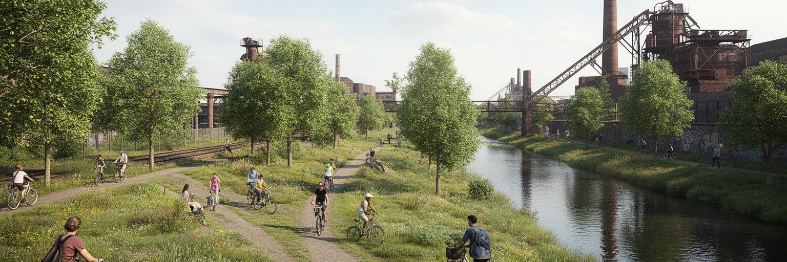
ルールは重工業の地域であると同時に、環境再生の実験場でもあります。長く汚染の象徴でしたエムシャー川の再生、工場跡の公園化、旧鉄道跡の自転車道、緑の回廊、採掘跡地の修復は、産業都市の傷を公共空間へ変える試みです。緑地は景観の飾りではなく、洪水対策、暑熱緩和、健康、移動、教育、地域イメージに関わるインフラです。炭鉱や製鉄所の土地は汚染、地盤、所有権、費用の難題を抱え、再利用には時間がかかります。きれいな公園ができても、周辺の雇用や住宅が改善しなければ、環境再生は都市の一部だけを美しくします。気候変動で豪雨と熱波が増えるほど、川、緑道、樹木、透水性のある土地は生活を守る役割を持ちます。ルールの環境政策は、過去の汚染を忘れるためではなく、工業化が残した負担を住民の健康と公共空間へ返していく作業です。自転車道を走る観光客、通学する子ども、散歩する高齢者、雨水を受け止める緑地を同じ地図で見ると、産業遺産と気候適応が分かちがたく結びついていることが分かります。緑道が市境を越えてつながれば、車に頼らない移動も増えます。環境再生は美しい週末の散歩道であると同時に、医療費、気温、浸水、孤立を減らす社会政策でもあります。緑を増やすだけでなく、汚染された土地の履歴を公開し、誰が維持費を負担するかを決めることも必要です。管理も条件です。
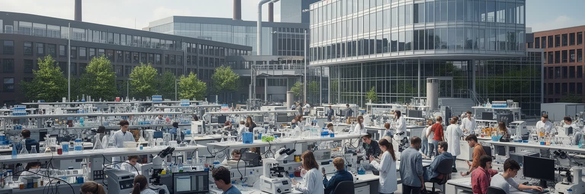
ルール地方は炭鉱と鉄鋼だけの地域ではなく、多くの大学と研究機関を抱える知識都市圏でもあります。ボーフム、ドルトムント、デュイスブルク＝エッセンなどの大学は、工学、材料、情報、医療、社会科学、環境研究を通じて産業転換を支えます。学生は駅前の商店街、賃貸住宅、図書館、研究室、病院、文化施設へ日常の流れを作り、かつての重工業地域に若い時間を加えます。大学の役割は、新しい企業を生むことだけではありません。地域の子どもが高等教育へ進む道を開き、移民家庭の上昇機会を支え、医療や教育の雇用を作ることにもあります。ですが大学があっても、卒業後に地域へ残れる仕事、手頃な住宅、公共交通、文化的な魅力がなければ人材は流出します。研究と現場産業が近いことはルールの強みであり、材料技術、物流、医療、脱炭素、都市再生の課題を実地で学べます。大学都市としてのルールを読むには、キャンパスの建物だけでなく、通学する鉄道、学生のアルバイト、職業訓練、病院、地元企業との共同研究を見る必要があります。知識産業は、過去の工業技能と結びついて初めて地域の力になります。大学が地域に開かれるほど、図書館、公開講座、学校連携、起業支援が近隣へ届きます。研究成果を外へ売るだけでなく、地元の中小企業や自治体の課題を解くことが、知識都市圏としての信頼を作ります。学びの循環が必要です。
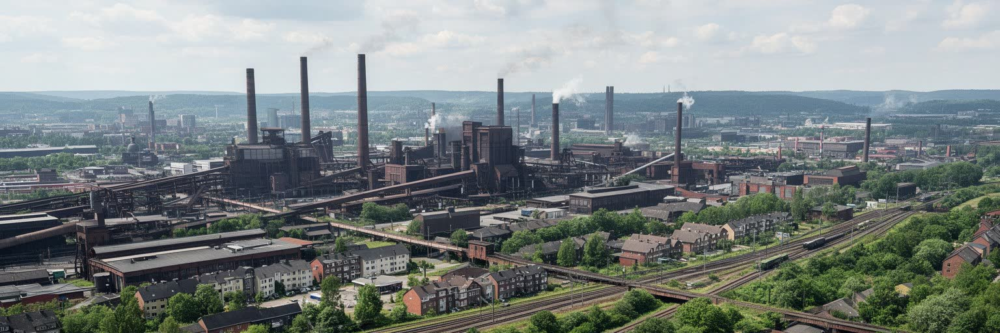
ルールを世界の都市地図で読むと、単独の金融中心でも観光首都でもないが、近代工業、労働、移民、環境再生、産業転換をまとめて考えるうえで重要な都市圏であることが分かります。炭鉱と鉄鋼の記憶は巨大な遺産施設に残り、ライン川と港は現在の物流を動かし、大学と医療は新しい雇用を作り、サッカー場は地域の感情を集め、住宅地には移民と高齢化と貧困の課題が重なります。ルールの魅力は、古い工場を美しく撮ることだけではありません。閉山後に人がどう働き直し、汚れた川をどう回復し、複数の都市がどう協力し、労働者の誇りをどう未来へつなぐかにあります。多核性は分かりにくいが、その分だけ地域の日常は一つの中心に従わず、隣町との関係で成り立ちます。ルールは、産業の成功が環境と身体に何を残すのか、そして衰退後に文化、教育、緑地、公共交通で都市を作り直せるのかを問い続ける場所です。世界の多くの工業地域が脱炭素と雇用転換に直面する今、ルールの経験は過去の物語ではなく、これからの都市政策を考える実例になります。重要なのは、転換をきれいな成功談として閉じないことです。失業、財政難、教育格差、移民差別、公害の記憶が残るからこそ、ルールは現実的な教材になります。複数の都市が近くに並ぶこの地域は、競争と協力を同時に続けることで未来を探しています。そこに強い現在性があります。